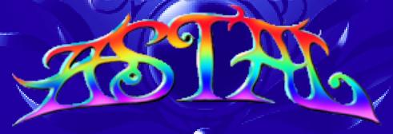

Saturn - Astal
 Por Gigacom - E o Oscar para o jogo mais bonito e mágico dos ultimos tempos vai para ...'suspense'.... ASTAL!!! É amiguinhos, em 95 a Sega lançou um dos jogos mais bonitos que a humanidade já viu, e Astal virou uma joia desde o seu nascimento. Acompanhe agora uma breve análise sobre esse maravilhoso game.
Por Gigacom - E o Oscar para o jogo mais bonito e mágico dos ultimos tempos vai para ...'suspense'.... ASTAL!!! É amiguinhos, em 95 a Sega lançou um dos jogos mais bonitos que a humanidade já viu, e Astal virou uma joia desde o seu nascimento. Acompanhe agora uma breve análise sobre esse maravilhoso game.
___________________________________________________________________________
Astal é um daqueles jogos que considero mágico e perfeito. Da trama até os minimos detalhes nos gráficos e efeitos de som, Astal se destaca por unir tudo que faz um jogo de uma maneira única e incrivel. Jogar o game é como viajar para um mundo fantástico, fazer parte dele e viver nele.

Enredo
Conta a história que uma grande deusa chamada Antowas criou um mundo a partir de uma jóia de extrema beleza. Ela chamou esse mundo de Quartilia, e deu à ele tudo de belo e admirável: céus, terra, mares... então, para habitar este novo lugar, ela criou duas criaturas, uma delas se chama Leda, a quem a deusa deu o poder de dar vida à coisas inanimadas em Quartilia. A outra pessoa que ela criou era Astal, a quem ela incubiu o dever de proteger e guardar Leda. Vendo que sua criação estava perfeita e segura, Antowas dormiu.
Neste mundo perfeito, não era de se esperar que algum mal surgisse para incomodar, mas Antowas estava certa em ter criado Astal, pois assim que ela dormiu, Geist, um deus maligno, tentou tomar para si Quartilia, e para desafiar e impedir Astal, ele criou Jerado que raptou Leda e a prendeu no meio de um oceano. Astal em uma tentavia de resgatar Leda, destruiu uma parte de Quartilia acordando a deusa Antowas. Como punição por sua falha em proteger Leda e pelo dano em Quartilia, Antowas o prendeu na lua que orbita Quartilia, destruiu Jerado e resgatou a Leda. Porém, Leda sentiu pena de Astal, e deu à ele uma jóia que possuia.
Porém, Geist continuava livre e Quartilia ainda não havia sido restaurada, e Jerado foi recriado. De sua prisão na lua, Astal testemunhou Leda ser novamente raptada. Então Astal, consumido pela sua vontade de proteger Leda, libertou-se de sua prisão e voltou à Quartilia para salvar Leda.
O jogo
A ação no jogo é constante. Astal é um carinha que tem uma baita força bruta, e arremessa tudo quanto é inimigo à léguas de distância ou os quebra em mil pedaços com um sopapo daqueles. Logo no inicio do jogo, ele resgata um pássaro de alguns inimigos, e o passarinho resolve acompanhar Astal por onde quer que ele vá, mesmo que ele o chame de pássaro idiota, mas curiosamente o bichinho azul não se incomoda com o que Astal fala, e os dois viram companheiros nessa aventura.
A animação do jogo é fluída, e o game rola sempre acima dos 30fps (tenho sérias suspeitas de que o game roda à 60fps em vários momentos, mas não há como medir isso em um console real). Todos os movimentos de todos os personagens e cenários desse jogo, receberam um tratamento incomparável nunca antes visto em qualquer jogo, mais parece um desenho animado de tão belo é a coisa. E haja efeito gráfico! Zoom, rotação, scaling... tudo que o Saturn pode fazer em 2D está presente neste game.
Os efeitos sonoros e a trilha sonora tambem não ficam atrás, aliás, é a trilha sonora que ambienta ainda mais o jogo. É uma mistura de vários estilos, formado pelo som de instrumentos de metal, cordas e eletrônicos. Algumas partes no jogo em que Astal ou outro personagem fala alguma coisa, o som vem direto do CD, tudo com efeitos especiais (surround, grave, etc).
A dificuldade não é algo assim tão grande, mas tem horas que o cenário aperta um pouco, e haja dedo pra conseguir passar pelos obstaculos ou escapar dos inimigos.
Conclusão
Astal é um jogo ímpar, incomparável, ele é o resultado de anos de experiência, tentativas e erros na fabricação de jogos para sistema em CD (Sega CD que o diga). Astal seria o estado da arte desse tipo de jogo, side scrolling com efeitos e detalhes que nunca apareceriam em um jogo em cartucho. Foi lançado bem no inicio da vida do Saturn, mas acabou sendo rapidamente esquecido e abafado pela crescente demanda por jogos 3D. Não obstante, Astal nunca foi mal falado naqueles dias, e ainda hoje consegue encantar qualquer um com seus belos gráficos e historia inigualável.
Acesse o Trombone e comente sobre essa matéria!


Que tal acessar a sua conta do banco, com todo o conforto e comodidade de sua casa? Para isso, o pai de familia iria precisar do Telebradesco, um cartucho especial fabricado com exclusividade pela Tec Toy para o Bradesco; e tambem iria precisar pegar emprestado o Mega Drive do muleque para acessar...